A meetup app built around safety primitives — GPS check-ins, time-bounded plans, structured interactions — so participation gets easier, not harder. 57% of NYC residents say they feel lonely; Gather is one design response.
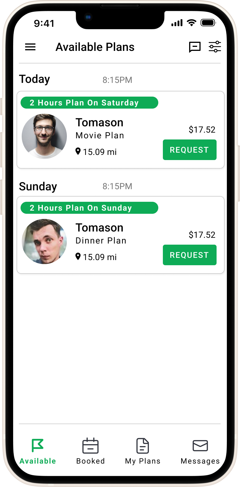
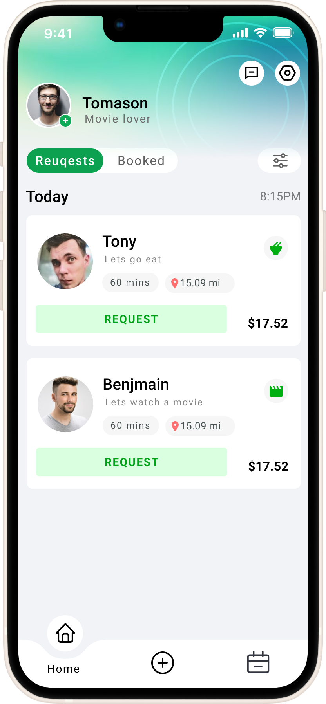
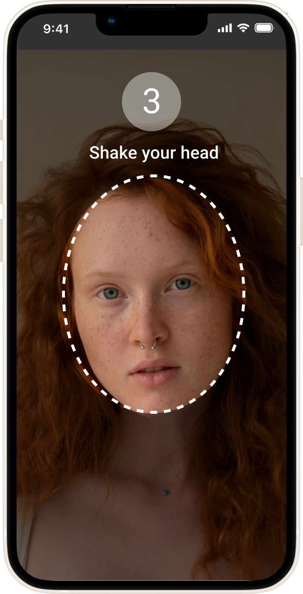
In NYC, 30% of older adults and 57% of the general population report loneliness — exacerbated by post-pandemic isolation, long commutes, and the cost of going out alone. The market need isn't more events. It's a way to lower the personal cost of showing up.
Gather is a design response: a mobile app to foster everyday community connection, with safety primitives baked into the core flows so the people most reluctant to socialize have a way in.
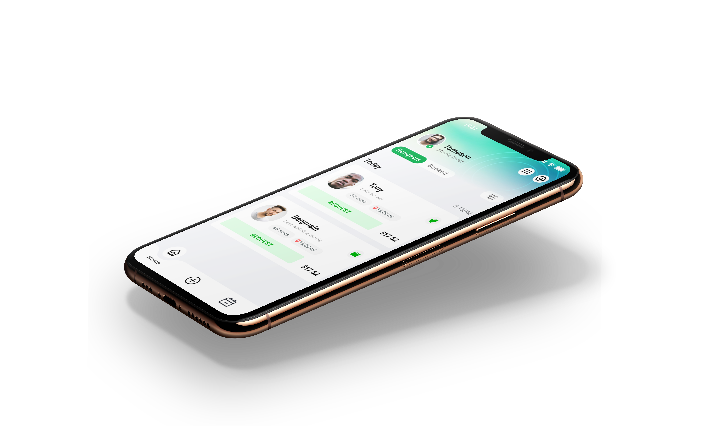
I targeted an audience in New York, aged 20–35, with a 224-person Google Survey — strong 78% completion rate. Using Excel I organized and visualized the data, analyzing key issues to generate actionable insights. The goal was to identify core pain points and align the resolution strategy with the project's timeline.
Despite frequent social activities, 55% of NYC residents often feel lonely due to time, transportation, and financial constraints. This highlights the need for targeted community solutions, not more generic event apps.
I developed user personas from interviews and surveys with lonely New Yorkers, paired with journey maps. These guided feature design, aligning with specific needs and optimizing the user experience.
Wants to expand her social circle beyond work, but the cost of an unknown plan with strangers is too high. Picks safety over spontaneity every time.
What she needs: diverse low-commitment activities to join, real-time messaging during the meet, location share opt-in per plan.
Curious about new events but anxious about open-ended social formats. Wants the rules of engagement visible before he commits.
What he needs: a clear flow from "browse" → "join" → "show up", time-bounded plans (start AND end), and a structured way to leave.
Reduce steps and clicks to lower drop-off rates between sign-up, profile creation, and joining a first activity.
Reduce required onboarding fields. Friction at first-touch kills the conversion that loneliness apps need most.
Build trust through visible safety features and a coherent brand — increase engagement and retention long-term.
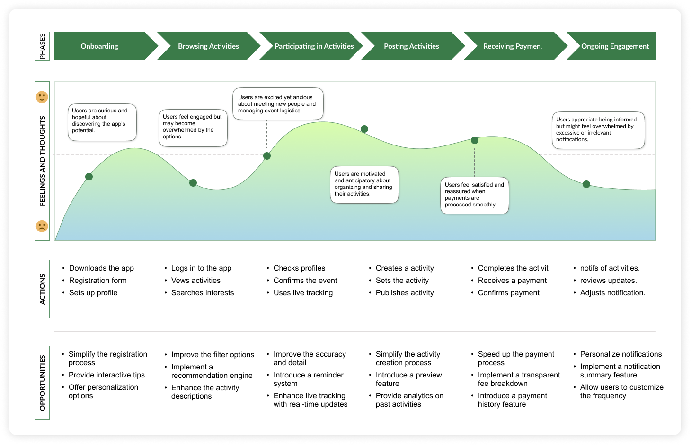
I designed the site map to streamline navigation and simplify interactions — reducing complexity and merging key sections so user flow had fewer dead ends. Tree-tested the proposed IA with 20 participants. Initial task completion was 60%; after consolidating "Earnings," "Calendar/Availability," and "Edit Profile" into a single Profile section, completion rose to 80%.
Moved "Messages" out of the bottom tab bar to the top-right corner. Shifted "Pricing" into Profile settings rather than bottom-nav primary. Both moves freed bottom-nav space for the three flows users actually used most.
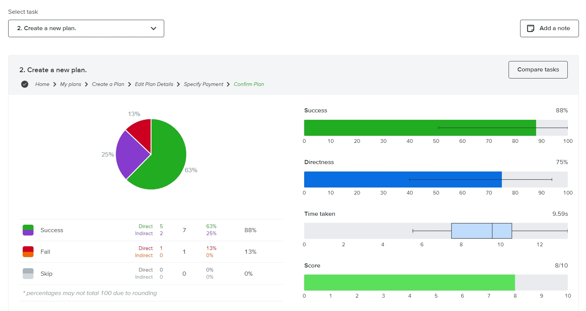
The app's quick plan feature is tailored to simplify social planning for Anna and John. By guiding them through a clear, structured sequence from the home screen to confirming their plans, it addresses their needs for safety and structured interactions. This efficient process helps them effortlessly organize and participate in social activities, reducing stress and enhancing the overall experience.
Anna — safety-conscious — can join diverse activities and grow her social circle outside the office without committing to ambiguous open-ended hangs.
John — prefers structure — can confidently engage in new events because the join flow is short, clear, and unambiguous. Lower anxiety, higher participation.
Real-time location sharing and time-bounded plans give both users confidence during the meet. Spontaneity becomes accessible because the rules are visible.
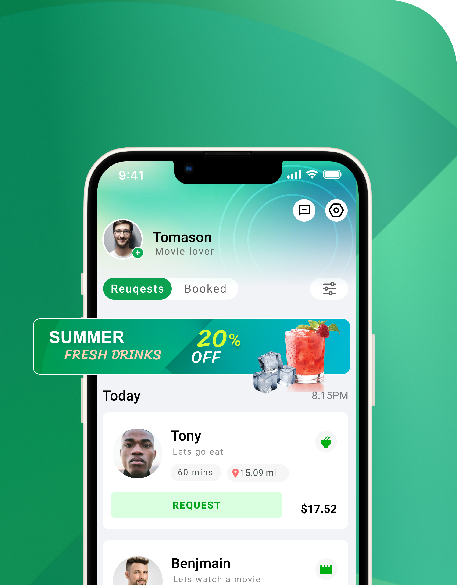
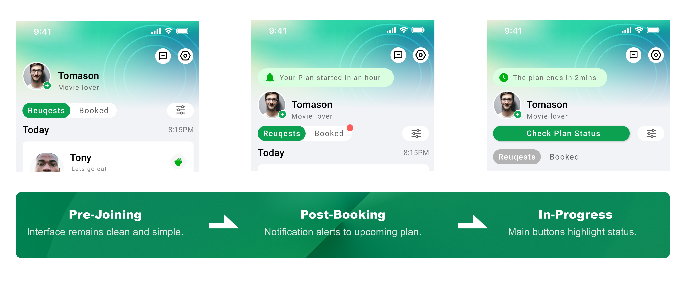
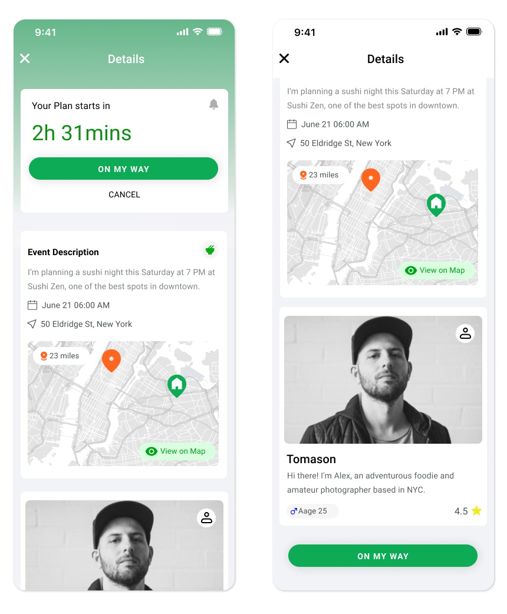
I ran usability testing with 12 participants on the hi-fi wireframe to assess and improve the app's structure. The feedback was direct: merging "Earnings," "Calendar/Availability," and "Edit Profile" into a single "Profile" section made navigation simpler and the experience more intuitive.
Two further refinements from the feedback: moved "Messages" from the bottom menu to the top-right corner, and shifted "Pricing" from the bottom menu into the user profile settings. Both freed the bottom-nav for the three flows users actually used most, reinforcing the IA decisions from the tree-test.
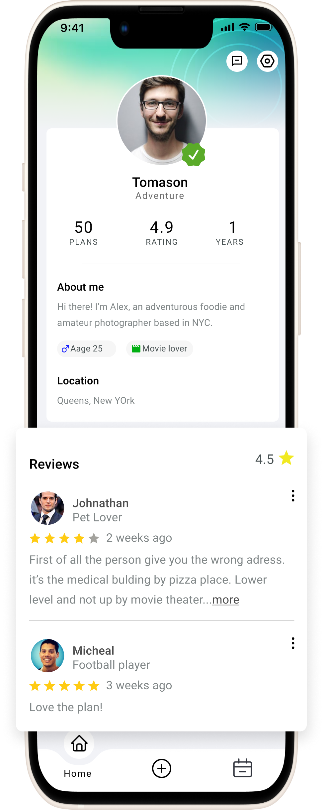
Streamlines social planning — browse, request, schedule a meetup, all with the duration and distance details visible enough to decide on. Key info is clear; decisions get made.
The complexities of user growth get addressed with structured design thinking. Focus stays on practicality and functionality — not novelty.
Users can quickly view available activities, send requests, and confirm plans with just a few taps. Every interaction feels natural — the social part is the hard part, not the app.
The old bottom area lacked design appeal — overly monotonous, hurting user conversion. We chose a more distinctive option: gradient green that makes the interface feel lighter and more breathable.
Key spaces are reserved for operations. Flexible interactive methods allow for expansion — boosting visibility and clicks for marketing activities without breaking the social layout.
Mid-section slots are configurable. The layout supports customizable integration, ensuring control and quick updates to meet business strategies as the app grows.
As users navigate through the product, focus shifts with stage and status. We tailor the UI to specific use cases so users identify key focal points fast and decide efficiently.
Color signals state changes. Motion and icons guide attention to key actions. Together they make state legible without text overload — the user always knows where they are.
The profile design uses clear metrics and detailed bios to enhance user filtering — improving match rates and engagement through a deeper understanding between users. An "F-pattern" layout places ratings and reviewer details at the top and left, optimizing readability and letting users scan content efficiently.
Interactive prompts and user-driven navigation make profile exploration seamless and inviting — not a static read-only card.
Users can opt in to identity verification — boosting profile credibility and perceived safety across the community. Safety is a feature you opt into, not a tax everyone pays.
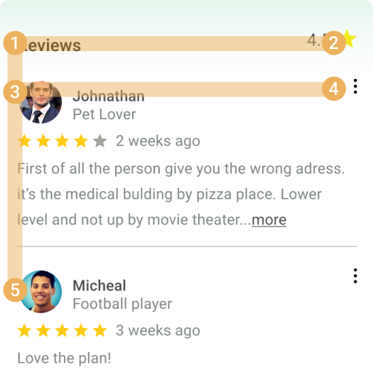
When users begin their current plan, the active-plan screen surfaces a map and chat window plus the essential tools — so users reach their destination without switching to an external maps app, and communicate in real time without breaking flow.
Visual: floating elements over the map provide easy access to chat and details — navigation and communication without clutter. The screen has one job: keep both users present and oriented during the meet.
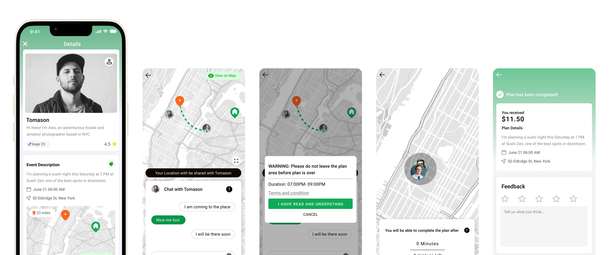
After booking a plan, key details like time and location get prioritized at the top — reducing cognitive load and improving the next-step efficiency. The information hierarchy uses an F-shape scanning pattern adapted to user context: what they need first depends on whether they're browsing or already committed.
A sticky CTA sits at the bottom of the screen so the call-to-action reappears after scroll — even when the top CTA scrolls out of view, the key action stays accessible. Important actions never get one finger-stretch away from where the user already is.
The design system establishes a cohesive, scalable framework. Refining the design language and the key feature surfaces produced a robust foundation — and prepared the product for future expansion. Primary brand color: vibrant green #0EAB56 — fresh, lively, signals the welcoming nature of the product.
The launch plan is staged across four quarters — starting with core development and initial testing, then feature expansion and market penetration, then user engagement and performance optimization, finally market reach and advanced analytics for continuous improvement.
Build the three core flows. Internal QA, friends-and-family beta, baseline performance.
Add discovery, recommendations, soft public launch in NYC. First marketing cohort.
Retention experiments. Notification tuning. Performance work on map + chat. Cohort-level metrics.
Expand metro coverage beyond NYC. Advanced analytics for continuous improvement post-launch.
Gather captures the developmental journey of a social companionship app — a project that significantly honed my skills in UX design, project management, and strategic execution. The stages here, from initial conception through pre-launch phases, demonstrate a commitment to creating a platform that enhances social connections in urban settings like NYC.
Looking ahead, I'm eager to launch this app and witness its impact on the community. Beyond this project, my ambition is to lead a team dedicated to innovative solutions — fostering a collaborative environment where technology and design converge to improve user experiences and community engagement.